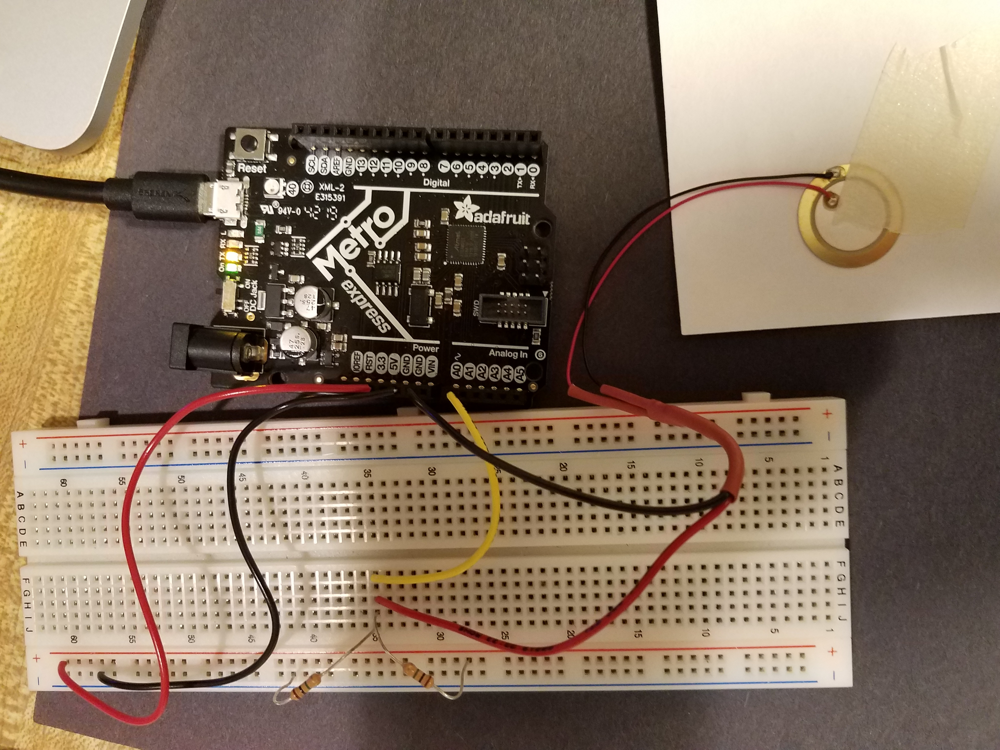
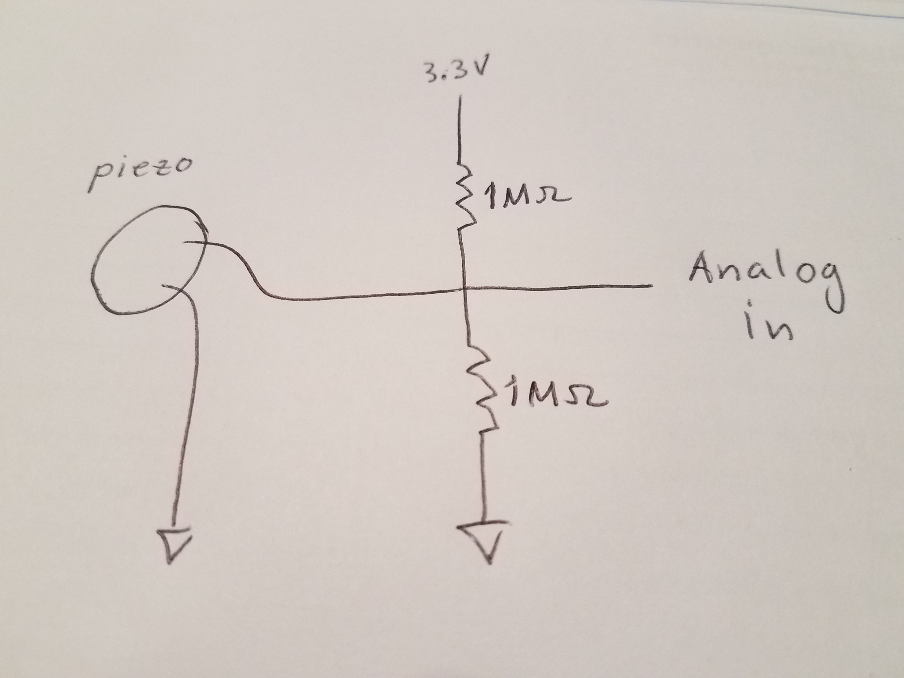

### Piezoelectric element for force, vibration, sound
Below is shown a piezoelectric disc, and its connections to Arduino. The schematic on the right is equivalent to the photograph on the left.
The two 1MOhm resistors keep the average voltage level near 3.3V/2 = 1.65 V. Use the voltage that is generated as the disc flexes to detect vibration, sound, force. Notice that the voltage is transient - the level returns to 1.7 V after a fraction of a second. For steady state measurement of force, try capacitance sensing.

